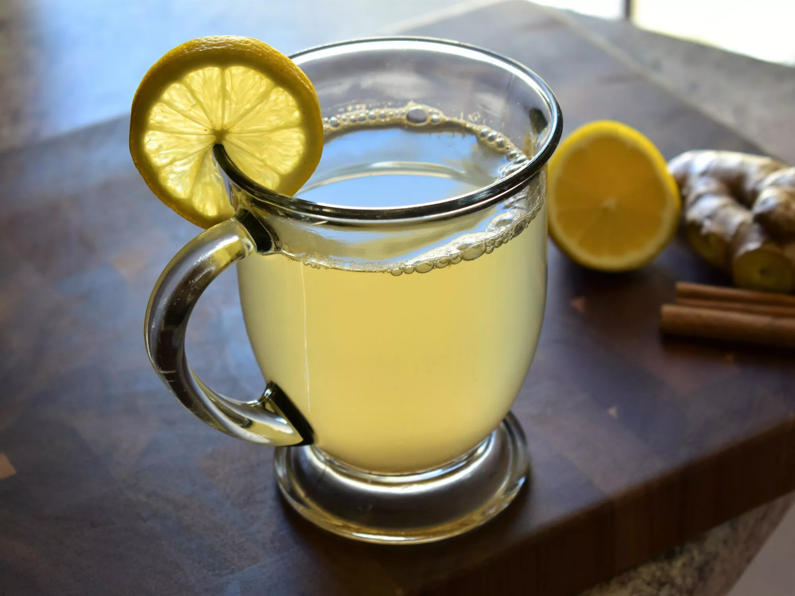

Lemon Ginger Honey Soother Recipe

Description
This honey ginger tea with lemon is a tangy infusion inspired by a combination of Indian, Egyptian, and
Costa-Rican wisdom for soothing the common cold.
Ingredients
- ¼ cup honey, or to taste
- 1 lemon, juiced
- 1 tablespoon finely grated ginger root
- ¼ teaspoon ground cinnamon
- 3 ½ cups boiling water
Steps
- Place honey, lemon juice, ginger, and cinnamon in a teapot or 4-cup glass measuring beaker with spout.
- Pour boiling water over mixture; stir until honey is dissolved.
- Cover the teapot and let steep for 5 minutes.
- The ginger should sink to the bottom but may be strained while pouring into a mug.